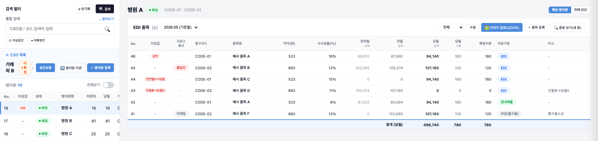

입력값은 그대로 보면서,
원본을 나란히.
웰던프로덕트 · 제약 유통 ERP · 2026.04–2026.06
수신한 값
확정수량
증빙 대조 후 확정한 값
별도 창과 수량 구분을 설명하는 도식
01 · 발견한 문제
입력 오류인지, 원본 문제인지
다시 찾아야 했습니다.
EDI 작업이 여러 메뉴에 흩어져 있었습니다. 입력값이 틀린 것인지 원본 자료에 문제가 있는지 가리려면 자료를 다시 대조해야 했습니다.
02 · 대안 검토
작은 모달 대신,
증빙을 별도 창으로.
모달은 증빙을 볼 영역이 작고 입력값을 가렸습니다. 고객사와 두 방식을 비교해, 원본과 입력값을 나란히 확인할 수 있는 별도 창으로 정했습니다.
03 · 화면과 정책
자동으로 읽은 값과
사람이 확정한 값을 나눴습니다.
OCR로 품목·수량을 자동 입력하고, 실무자가 원본과 대조해 보정·확정하도록 설계했습니다. 당월 수량은 수신값, 확정수량은 증빙 대조 후 확정한 값으로 구분했습니다.
고객사 합의를
프로토타입과 PRD로 연결했습니다.
거래처 → 병의원 → 품목 순서로 탐색하며 대조·보정·확정하는 흐름을 정리해 개발 전달까지 맡았습니다. 제품 디자인과 개발 구현은 협업 담당자가 수행했습니다.
기획·고객사 합의전체 근거·세부 정책·용어 보기
EDI 증빙 대조 화면
원본과 입력값을 나란히 대조할 수 있도록, 증빙을 별도 창으로 여는 방식으로 정했습니다.
- 본인 역할대조 화면 대안 검토·기획
- 기획 범위ERP·협력사 포털, 18개 업무 영역 단독 기획
- 진행 상태기획·고객사 합의
고객사 합의, PRD·프로토타입 개발 전달까지 맡았습니다. 제품 디자인과 개발 구현은 협업 담당자가 수행했습니다.

- 1탐색 순서거래처 → 병의원 → 품목 순으로 이동
- 2OCR 업로드원본 이미지에서 품목·수량을 자동 입력
- 3수량 두 칸당월 수량(수신값)과 확정수량
- 4증빙 보기원본 증빙을 별도 창으로 열기

- 01상황과 문제오류 원인을 가리려면 자료를 다시 대조해야 했습니다.
- 02해결증빙은 별도 창으로, 수량은 수신값과 확정값으로 나눴습니다.
- 03결과고객사와 합의해 프로토타입·PRD에 반영했습니다.
상황과 문제
기존 업무입력 후 오류 원인을 다시 찾는 업무
- EDI 작업은 여러 메뉴에 흩어져 있었고, 입력 과정의 오류인지 원본 자료의 문제인지 가리려면 자료를 다시 대조해야 했습니다.
- 원본과 대조하며 판단할 흐름이 필요했습니다.
여러 메뉴에 흩어진 EDI 작업
입력 오류인가, 원본 자료의 문제인가?
해결
입력 작업은 그대로 두고, 증빙만 넓은 창에서 대조하도록 했습니다.
증빙 확인 방식
모달
증빙이 작고, 입력값을 가린다
별도 창
원본과 입력값을 나란히 본다
수량 값
한 칸
수량을 한 칸으로 본다
수신값·확정값 분리
받은 값과 확정한 값을 나눠 보도록 기획
설명 도식. 두 방식을 비교하려고 다시 그린 그림입니다. 증빙 확인 방식은 고객사와 협의해 별도 창으로 정했습니다.
기획한 흐름OCR로 자동 입력하고, 실무자가 대조해 확정
- 1OCR 자동 입력
- 2원본과 대조
- 3보정
- 4확정
- OCR로 품목·수량을 자동 입력하고, 당월 수량(수신값)과 확정수량(증빙 대조 후 확정한 값)을 나눴습니다.
- 여러 메뉴에 흩어진 EDI 작업은 거래처 → 병의원 → 품목 순으로 탐색하며 대조·보정·확정하도록 연결했습니다.
탐색 순서 거래처→병의원→품목
결과
기획·고객사 합의
모달과 별도 창을 비교해 고객사와 별도 창으로 정하고, 프로토타입·PRD에 반영했습니다.
- 프로토타입증빙 별도 창, OCR 업로드, 수량 두 칸을 담은 화면
- EDI PRD수신값·확정값 정의, SCR-EDI-001 화면 기능 (초안)
- 판단 정리검토한 대안과 합의한 방향 (재구성)
재구성 자료판단을 결정로그 형식으로 정리하면
- 판단할 문제
- 모달에서는 원본과 입력값을 대조할 영역이 작음
- 검토한 대안
- 화면 안의 모달로 확인 / 증빙을 별도 창으로 열어 확인
- 합의한 방향
- 고객사와 협의해 별도 창 방식 선택
- 명세로 연결
- OCR 자동 입력 흐름과 원본을 대조하는 화면 구성
문서 발췌EDI PRD
당월수량은 수신한 값, 확정수량은 증빙 대조 후 확정한 값으로 구분했습니다. SCR-EDI-001로 화면 기능을 정리했습니다.
확인한 문서는 초안 상태입니다.
용어 풀이
- EDI
- 거래처와 자료를 정해진 전자 형식으로 주고받는 방식(전자문서교환)
- 증빙
- 입력한 품목·수량의 근거가 되는 원본 자료
- OCR
- 이미지 속 글자를 읽어 텍스트로 바꾸는 기술(광학 문자 인식)
- 모달
- 지금 보던 화면 위에 겹쳐 뜨는 작은 창
- PRD
- 제품 요구사항 문서(Product Requirements Document)
- SCR-EDI-001
- 화면 식별자. 화면 단위로 요구사항·정책·필드·미결 사항을 묶는 번호